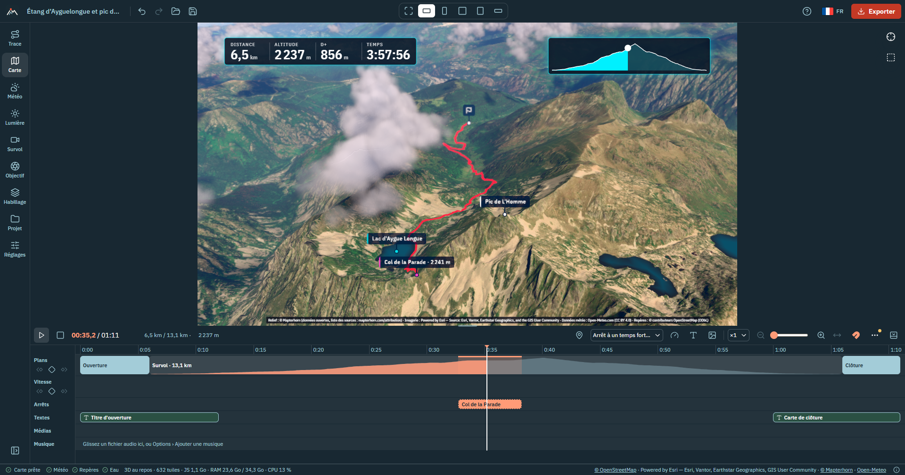

Before you start
OpenFlyover lays the track of an outing (hike, trail run, ride, ski tour…) on real 3D terrain covered with aerial photos, flies a camera along it, and saves the result as a video. Everything runs on your computer: there is no account and your track is never uploaded.
What you need
- A recent Chrome or Edge, or the desktop application. Video export has not been tested in Firefox or Safari.
- A decent graphics card: it sets the export speed.
- An Internet connection for the map tiles, unless you prepared the track for offline use.
Two ways to run it
- As a website, on your own machine or a web host (served over HTTPS).
- As a desktop application for Windows, macOS and Linux. It is the same app, with native file dialogs and batch rendering.
The interface is available in French, English, Spanish, Italian and German: the flag button of the top bar (next to ?) chooses the language of the interface and of the texts drawn into films and posters, and the first run follows the browser's language when it is one of these (otherwise French). This guide quotes the labels in French, the reference language, with a translation in brackets the first time.
The screen

The screen reads like video editing software:
- Top bar: project name, undo / redo, "Ouvrir" (open) and "Enregistrer" (save) as icons (a small dot on the save icon means unsaved changes; once saved it takes the accent colour for a few seconds), the output format in the middle and "Exporter" (export) on the right. The ? button lists every keyboard shortcut, and the flag button next to it chooses the language.
- Left rail: nine labelled tabs, "Trace" (track), "Carte" (map), "Météo" (weather), "Lumière" (light), "Survol" (flyover), "Objectif" (lens), "Habillage" (overlay), "Projet" (project) and "Réglages" (preferences of the app on this device). Click the active tab again, or press [, to fold the panel.
- Centre: the 3D view, framed exactly like the video. Below: the film timeline.
- Bottom: a thin status bar with the map state, the loading of the weather, landmarks, region, water and forests (a forest chip says « en attente » while the other OpenStreetMap requests go first, then « chargement »), performance figures when there is room, and the short credits of the data sources (ⓘ shows the full sources, licences and the IGN update date, a link to the GitHub repository, and "Voir les nouveautés", which lists what changed in each version in plain words; a dot on ⓘ tells you there are news you have not seen yet). "Réglages" chooses what it shows. While the current view still waits for tiles, a small ring fills up next to "Carte · 72 %"; "Carte prête" (map ready) with a check means everything in view is loaded, so a preview from here runs without blurry patches. Tiles that could not be loaded show as "N tuiles en erreur" in yellow; they are retried automatically.
Messages (track imported, project saved, video ready…) appear at the bottom of the view; errors stay until you close them. The app remembers the open tab and whether the panel is folded. Next to the settings that make the export longer (clouds quality, motion blur, depth of field, resolution, frame rate) a small three-bar icon shows how heavy the current value is, with the factor in its tooltip (long-press on a phone); a dot on a tab means one of its settings is at the heaviest level.
Import a track
- Drop a file. Drag one or more
.gpxor.fitfiles anywhere into the window. The home screen ("Votre sortie, vue du ciel") says in one sentence what the app does, shows what is new in the latest version ("Nouveau en …", a click opens "Nouveautés"), links to this guide ("Premiers pas") and, on the website, to the desktop app; it also offers "Choisir un fichier" (choose a file), "Essayer avec l'exemple" (a real hike in the Ariège Pyrenees, the Étang d'Ayguelongue and the Pic de l'Homme), "Ouvrir un projet…" and, under "Récents", your latest projects. Until a track is loaded, the rail shows only "Projet"; the other tabs and "Exporter" appear with the first track. - Let the view frame it. The camera frames the track. In France or Switzerland the imagery switches to IGN or swisstopo aerial photos, unless you already chose a source.
- Add more if needed. "+ Ajouter" (add) in the track list adds tracks: "Fichiers GPX ou FIT…" or "Activités Strava…". "Ouvrir" (Ctrl+O) accepts a track or a saved project.
Several tracks
The flyover, weather, landmarks and climbs follow the first track; the arrow on another track makes it the flown-over one, and its colour chip changes its colour. With two tracks or more, "Plusieurs traces" (several tracks) chooses how the film plays them:
- "La première" (the first one, default): the first track is flown, the others are only drawn;
- "À la suite" (one after the other): the film flies every track in the order of the list, each one a stage with its own colour, name and figures (the overlay counters, profile and mini-map are those of the stage). Four things to know:
- One place for what all stages share: Trace › "Plusieurs traces" sets the transition between two stages and the card at the start of each stage, for all of them. Each transition makes three choices: "Passage" is a "Coupe" (cut), a "Fondu au noir" (the default) or "Fondu au blanc" (the film holds for its "Durée", 1.5 s by default, on top of the flight); "Passer la nuit" (on by default) shows the night spent between two days, with dusk and dawn, when the two stages are on two days (otherwise the passage alone); "Revoir l'étape finie" makes the camera rise for a few seconds at the end of the stage to show all of it before the passage (with the night, during the night). Under "Une carte au début de chaque étape" (which shows or hides every card) you set what the cards show: "Automatique" (the stage name, "Étape 2 sur 3" and the figures you tick: date, distance, D+, duration, start time, weather) or "Mon texte" with {name} {n} {count} {date} {distance} {ascent}, their position, size, colours and how long they stay.
- One transition or one card on its own: the timeline has an "Étapes" lane (a block per stage, and between two stages the block of the transition) and each card is a block of the "Textes" lane. Click a block to change only that one: its panel says "Réglage commun…" or "Réglage propre…", and "Reprendre le réglage commun" takes it back. "Utiliser pour toutes les transitions" makes a transition the common one. "Plusieurs traces" counts the transitions and cards set on their own and can bring them all back. Drag the right edge of a fade to set its length, the right edge of a card for how long it stays; Del on a card hides it, "Régler la carte de l'étape n" in the transition's panel leads to it to show it again. A card appears during the transition before its stage and stays on the first seconds of the stage. The first stage starts with the opening title instead of its card while that title is shown (Habillage › Titres); the panels say so.
- Nights: what plays is what you chose. The dusk, night and dawn seconds are set in Lumière › "Jours et nuits", for every night; "Montrer les nuits" there only concerns the nights inside a stage.
- Order and duration: drag a track by its handle (with a finger, press and hold for a moment first), move it with Alt ↑ ↓, press the up arrow to move it one stage earlier, press "Ordonner par date", or drag a stage block on the timeline. Everything placed on a stage (stops, speed sections, camera, parameter and marker keys, its transition and card) follows it, texts and photos stay at their time unless attached to a stop, and one undo (Ctrl+Z) puts everything back. Select a stage block to set its "Durée du vol" (or drag its right edge, or ← →): it then flies for that long, its stops included and the transitions not, the others keep their share of the "Durée du survol" and the film changes by the difference; "Durée automatique" takes it back. The weather and the clouds follow the first track; the sun follows each stage and blends across the transitions (see "Light").
- "En parallèle" (side by side, the ghost race) replays them together: "Synchronisation" (same elapsed time, same clock time or same distance), "Caméra sur" (camera on) the first track, another track (it then becomes the first one), "Celle en tête" (the one ahead) or "Toutes les traces" (all of them in the frame), and the leaderboard at the marker, shown and set in "Habillage" › "Compteurs" (its one place);
- "Enchaîner en un seul parcours" (chain into a single route) merges them in order of start time, for a multi-day outing or a recording split in two files. The message offers "Annuler" (undo). Unlike "À la suite", the tracks become one (one colour, one set of figures).
From Strava
"+ Ajouter" › "Activités Strava…" in the track list (or "Importer depuis Strava" on the home screen) imports your activities. OpenFlyover ships no Strava key, so you create your own Strava application once:
- On strava.com/settings/api, create an application (free). In "Authorization Callback Domain", enter
localhost(local site or desktop app) or your site's address. - Paste its Client ID and Client Secret into OpenFlyover. They stay in this browser (or the desktop app) and are sent only to Strava.
- Click "Se connecter" (connect) and allow reading your activities.
- Tick the activities ("Plus" loads older ones), then "Importer".
Access is read-only but includes private activities and the full track, privacy zones included: keep it in mind before publishing a film. Strava allows 100 requests per 15 minutes and 1,000 per day per application. "Déconnecter" forgets the connection.
Plan an outing
You can fly over a route before doing it: import it like any track (a GPX prepared on Komoot, Visorando, IGNrando…).
Passing times and weather forecast
A track without times (usually one prepared on Komoot, Visorando…) has a "Prévoir la sortie" section: pick the date, start time, activity and pace, then "Calculer les horaires". The sun, counters and weather forecast (up to 16 days ahead) then follow the planned outing.
A track without elevation (a route drawn on a map) gets it from the terrain: automatically at import for a usual outing, otherwise with "Calculer l'altitude" in its card. The "altitude calculée" chip shows it; "Effacer l'altitude complétée" returns to the file's track, also when only its gaps were filled (from this version on). Bridges and tunnels follow the ground. Compute the elevation before "Prévoir la sortie" so that climbs count in the times.
Correct the figures
The GPS is sometimes a few metres off (a summit at 2001 m recorded at 1992 m). Open "Corriger les chiffres" in the track's card and type the right distance, D+, highest point, duration (as 5:30) or top speed, then "Appliquer". An empty field keeps the file's figure, shown in grey. The opening and closing cards and the poster then show your figures, and the card says "chiffres corrigés". "Revenir aux chiffres du GPX" removes them. The 3D flight itself does not change.
Look around and play
| Action | How |
|---|---|
| Rotate · pan · zoom | Left drag · right drag · mouse wheel |
| Back to the overview | Crosshair button at the top right of the view, or F |
| Play / pause | ▶ in the timeline, or Space; ■ returns to the start |
| Move in time | Click or drag the profile; ← → (1 s, 5 s with Shift), Home, End |
| Jump to a place | Click the track in the 3D view |
| Playback speed | ×0.5 to ×4 |
When paused, you can orbit freely around the marker.
Choose the look
Nine tabs, in the order you make a film: one tab, one question. Each groups its settings in short foldable sections. The two or three settings that matter stay open; every other one is a single row with its name and current value, like "Exposition · 0 IL ›": click or tap the row (or press Enter) to show its slider or buttons right below it, again to hide them. A value in bold differs from the default. Each feature is turned on or off with a switch; what is selected is shown in the trail-marker red. On a phone the tabs sit in a bar at the bottom that scrolls sideways.
| Tab | What you set there |
|---|---|
| "Trace" | Your tracks, "Plusieurs traces" (one after the other or side by side), the look of the line ("Trace", with the track colouring: speed, slope, elevation, heart rate, cadence, power, temperature), the marker ("Marqueur") |
| "Carte" | Base map (aerial photos: IGN in France and swisstopo in Switzerland are chosen automatically, Esri World Imagery is the default elsewhere, and the national photos of Austria, Japan and the United States are picked by hand; and topographic maps; with IGN or Esri, "Date des photos" › "Chercher les dates disponibles ici" lists the older photos of the place, a winter date for snow, a summer one without) and "Eau reflétante (mer, lacs et rivières)" (draws the OpenStreetMap water around the track with reflections of the sky and the sun: the sea along a coast, the lakes, and the rivers and streams, including those the map only draws as a line, as thin ribbons of water; it needs an Internet connection once per track, and its "Intensité de l'eau" slider sets how strong the water looks; the sea is flat and nothing is drawn far from a coast, so a polder stays land), forests ("Forêts", on by default: simple 3D trees placed where OpenStreetMap has forests, thinner away from the track, with "Densité des arbres", 20 to 150 trees per hectare; they need an internet connection, the exported film shows the same trees as the preview; they cast no shadow, but receive those of the relief), relief exaggeration and "Nettoyer le relief en mer" (removes the isolated spikes the elevation data sometimes leave over the sea, e.g. off Corsica; off by default; its option "Ramener la mer à 0 m" also flattens real depressions), OpenStreetMap landmarks and points of interest ("Repères et points d'intérêt") |
| "Carte" | Base map, listed as "Photos aériennes", "Cartes" and "Ne couvrent pas la trace" (the national sources that show nothing where your track is) (aerial photos: IGN in France and swisstopo in Switzerland are chosen automatically, Esri World Imagery is the default elsewhere, and the national photos of Austria, Japan and the United States are picked by hand; and topographic maps) and "Eau reflétante (mer, lacs et rivières)" (draws the OpenStreetMap water around the track with reflections of the sky and the sun: the sea along a coast, the lakes, and the rivers and streams, including those the map only draws as a line, as thin ribbons of water; it needs an Internet connection once per track, and its "Intensité de l'eau" slider sets how strong the water looks; the sea is flat and nothing is drawn far from a coast, so a polder stays land), forests ("Forêts", on by default: simple 3D trees placed where OpenStreetMap has forests, thinner away from the track, with "Densité des arbres", 20 to 150 trees per hectare; they need an internet connection, the exported film shows the same trees as the preview; they cast no shadow, but receive those of the relief), relief exaggeration and "Nettoyer le relief en mer" (removes the isolated spikes the elevation data sometimes leave over the sea, e.g. off Corsica; off by default; its option "Ramener la mer à 0 m" also flattens real depressions), OpenStreetMap landmarks and points of interest ("Repères et points d'intérêt") |
| "Météo" | Weather of the outing ("Météo de la sortie"), clouds ("Météo", "Manuel", "Mer de nuages"; with "Manuel" or "Mer de nuages", "Vent" sets how fast they drift, 0 = still, and "Direction du vent" where it comes from; in "Météo", tick "Choisir le vent à la main" for the same controls), rain, snow and mist in the picture and their intensity ("Pluie et brume"), snow on the terrain ("Neige") |
| "Lumière" | Atmosphere, shadows and exposure, the sun's time and date ("Soleil"), colour grading ("Couleurs") |
| "Survol" | Camera preset in "Caméra" › "Préréglage", a grid of tiles (icon, name, distance multiplier and tilt): "Poursuite", "Oiseau", "Orbite", "Cinéma", "Drone haut", "Satellite"; "Plus de préréglages" unfolds "Drone rapide", "Hélicoptère", "Planeur", "Montgolfière", "Avion" and "Vue du dessus" (the one you picked stays in the first grid), plus a "Personnalisé" tile, selected when your settings match no preset. Each preset implies a camera style (the motion: chase, sway, orbit, from above, cinematic), described under the tiles; to change it alone, the "Style" row of "Caméra". With "Orbite autour du marqueur", "Tours d'orbite" sets how many full turns the camera makes around the marker over the flight (1 by default). The "Libre (images clés)" style follows nothing: without keyframes the camera stays fixed on a view of the whole track; add keyframes on the timeline to move it (it holds the first one's view, glides from one to the next — even during a stop —, holds the last one). In this style the framing sliders are hidden; the "Libre" tile, last of the presets, picks it. Film duration or marker speed (15 s to 10 min), pacing at highlights, situation shots. Camera smoothing sits in rows of "Caméra": "Lissage des virages" (metres of track, "Auto" by default), "Lissage de la visée" and "Lissage de la caméra" (seconds: the view eases into stops and speed changes and turns instead of jerking), "Fin en douceur" (the camera slows to a stop over the last seconds and watches the marker finish). "Lissage de la caméra" also smooths the camera's path: small zigzags and GPS noise no longer shake it. The marker and labels hidden by the relief disappear completely (never half-transparent); the camera climbs or turns around the marker to keep it in sight. |
| "Objectif" | Lens effects: motion blur, bloom, depth of field, and lens flare |
| "Habillage" | Overlay on the film. "Afficher l'habillage" shows the counters, profile, mini-map, weather, logo and free text; the opening title and closing card have their own switches (they show with it off too), and the texts and photos of the timeline always show. Style ("Éditorial", "Diffusion", "Application", "Néon nuit", "Cinéma" (letterbox bars, figures as a subtitle line), "Journal de bord" (a paper sheet on the left with the figures as a list, the map and the profile), "Tableau sportif" (a dark band with big figures over the profile); each of the last three places the widgets itself when chosen, you can still move them afterwards; all also for the poster, each with its own arrangement), colours and fonts, "Fond du texte" for styles without panel ("Rectangle arrondi flouté", "Ombre du texte seulement", "Contour du texte seulement"), "Couleurs des étiquettes" (a list to pick the label type, then its colour; labels take the font and panel of the style), titles (the switches of the opening title and the closing card, always there; their settings are in the inspector, see "Timeline"), counters (distance, altitude, D+, slope, elapsed time, time of day, speed, pace in min/km, heart rate, power, temperature: those the track does not record are greyed out), profile and mini-map (the position dot of each has its own colour, the 3D marker's by default), weather, logo and text, source credits |
| "Habillage" | Overlay on the film. "Afficher l'habillage" shows the counters, profile, mini-map, weather, logo and free text; the opening title and closing card have their own switches (they show with it off too), and the texts and photos of the timeline always show. Style ("Éditorial", "Diffusion", "Application", "Néon nuit", "Cinéma" (letterbox bars, figures as a subtitle line), "Journal de bord" (a paper sheet on the left with the figures as a list, the map and the profile), "Tableau sportif" (a dark band with big figures over the profile); each of the last three places the widgets itself when chosen, you can still move them afterwards; all also for the poster, each with its own arrangement), colours and fonts, "Fond du texte" for styles without panel ("Rectangle arrondi flouté", "Ombre du texte seulement", "Contour du texte seulement"), "Étiquettes 3D" (every setting of the labels in the 3D view, in one section: what shows (named GPX points, start and finish, photos), "Bornes kilométriques", size and range, "Couleurs des étiquettes" (a list to pick the label type, then its colour; labels take the font and panel of the style) and the keys that hide or show them along the way), titles (the switches of the opening title and the closing card, always there; their settings are in the inspector, see "Timeline"), counters, profile and mini-map (the position dot of each has its own colour, the 3D marker's by default), weather, logo and text, source credits |
| "Projet" | Project actions ("Nouveau projet", "Ouvrir…", "Enregistrer", "Enregistrer sous…", "Fermer le projet"), "Mes projets" (my projects), settings presets, offline preparation ("Hors ligne") |
| "Réglages" | Preferences of the app on this device: the appearance ("Apparence": theme "Clair" / "Sombre" / "Système", accent colour, colour of the top bar and rail; a colour too light for the white text is darkened automatically; "Rétablir l'apparence par défaut" undoes it; the 3D view and the film are not affected), what the status bar shows, the recorded clock time in the timeline, the diagnostic report; on the desktop application, "Mises à jour" (installed version, "Rechercher une mise à jour": it looks for a newer release only when you press it, shows what it brings, then "Installer et redémarrer" installs it and restarts the app, after asking and never during an export) |
Light
By default the sun is where it was at the time of the outing. In the "Lumière" tab, "Soleil" (it needs the "Atmosphère" switch above it), "Source de la lumière" chooses "Heure de la trace" (the recorded time: with tracks "À la suite", every stage is lit at its own hour) or "Heure fixe" (one fixed time for the whole film, every stage included), which places the sun anywhere in the day, with one-click "Lever" (sunrise), "Matin", "Midi", "Heure dorée" (golden hour), "Coucher" (sunset) or "Nuit". The "Jour" row lights the scene on another date: the season changes the sun height. With "Heure de la trace" and tracks "À la suite", the light blends smoothly across each junction that is a fade (the time of day runs on from the end of one stage to the start of the next, through dusk, night and dawn) instead of switching at the cut; a "Nuit" junction has its own dusk, night and dawn, and keys on the sun hour replace the blend.
"Jours et nuits" ("Lumière" tab): one switch, "Montrer les nuits". On a track recorded over several days, the film pauses at each night while the sun sets, the night passes (moonlit clouds) and the sun rises again; the seconds of "Crépuscule", "Nuit" and "Aube" are set there (for tracks "À la suite" they apply to the "Nuit" junctions, whose inspector shows them too). For a single track recorded over several days, "Cartes de jour" turns on a card at the start of each day, drawn from the track, the nights and the weather (it follows them if you change the track). Choose what it shows with the chips under "Informations" (date, distance, climb, duration, start time, weather), its "Titre" ("Jour {n}" by default; {n} is the day number, {count} the number of days, {date} the date), its position, its size and how long it stays. Each day's card is also a block on the "Textes" track of the timeline: click it to open the same settings (they are shared by all the days), drag its right edge to set how long the cards stay, Del switches them off. "Vue haute pendant la nuit" lifts the camera during the night before each day to show that day's route from above, holds it there, and brings it back down to the marker at dawn, with the card on screen (the length of the night is the one set above). Cards "Jour n" added by an earlier version are removed when you turn this on. Tracks "À la suite" have their stage cards instead, and each transition chooses "Passer la nuit" and "Revoir l'étape finie" (Trace › "Plusieurs traces").
Weather
The weather of the day (or the forecast for a planned outing) feeds the haze, the sun veil and the volumetric clouds. The cloud cover is read at a place about every 10 km along the track, so the sky changes along the way, and the clouds cast shadows on the terrain ("Ombres des nuages", in "Lumière" › "Atmosphère", on by default). Clouds can also be set by hand, or turned into a "Mer de nuages": a flat sea of low clouds filling the valleys, its top set with "Sommet de la mer de nuages", the summits above it emerging. "Rendu de la mer de nuages" chooses between "Volumétrique" (clouds in volume, more costly) and "Nappe" (a lit surface of rolling cloud tops, without grain and lighter to compute). In the "Météo" tab the weather of the outing fits in two lines: the outing, then the moment at the marker.
Snow. A winter outing should not look like the summer aerial photo. In the "Météo" tab, "Neige" puts snow on the terrain above a limit: "Selon la météo du jour" (the default) computes it from the weather of the day, "Manuelle" lets you set it with "Limite de la neige" (from 0 to 4,500 m), and "Aucune" keeps the photo as it is. With the weather of the day, the limit is the altitude where the mean temperature of the day reaches 0 °C (6.5 °C less every 1,000 m), but only if there is snow on the ground or falling that day; without it, there is no snow. The panel says the result in one line ("Neige au-dessus de 1 400 m", or why there is none: the weather of the day is turned off or not loaded, or it reports no snow that day). The limit is not a straight line: it is ragged, the photo stays faintly visible where the snow is thin, and the very steep slopes keep their rock. With "À la suite", each stage follows its own weather; the line shown in the panel is the one at the start of the first track. A track without altitude gets no snow from the weather (the manual limit still works). The glaciers mapped by OpenStreetMap are always white, whatever the limit, so a glacier keeps its snow in summer too (with its crevasses, and a little bluer in the shade; the very steep faces keep some rock); "Aucune" removes them with the rest of the snow. They need an internet connection once per track, and the "Glaciers" chip of the status bar says whether they have loaded. The snow comes from the same Open-Meteo request as the rest of the weather, so nothing more is downloaded. Lakes above the limit freeze: the water turns into matt white ice, with no waves, over the same transition as the ground (rivers and the sea keep flowing). Seen from high up, streams keep a thin line of water instead of vanishing.
Track and marker
"Marqueur" ("Trace" tab) chooses a ball, a figurine or your photo in a circle. The ball has a "Style" (Disque, Halo, Pulsation) and a "Couleur" (free, or "Celle de la trace"); with several tracks side by side each marker keeps its track's colour. The figurine is chosen "Selon l'activité" by default, or picked among the hiker, runner, cyclist, skier, paraglider, trail runner, e-bike, ski touring, swimmer, kayak, rider…, with a "Couleur du disque" and the colour of its edge (or of its outline with the "Silhouette" badge). "Plus d'options" sets the "Badge" (Rond, Épingle, Carré arrondi, Silhouette), an "Étiquette" under the marker (none, the track name or a free text) and "Tige et ombre au sol".
The "Trace" section has two parts: "Ligne" (how the line is drawn: "Trace qui se dessine", "Traînée", "Colorer selon", smoothing, width, dashes) and "Halo" ("Halo de la trace" and its intensity, width and colour). In "Ligne", "Trace qui se dessine" draws only the part already covered; once it is on, "Traînée" keeps only the last stretch behind each marker, its "Longueur de la traînée" in metres or kilometres, so a loop or an out-and-back stays readable; "Halo de la trace" adds a glow around the line, with its rows "Intensité du halo", "Largeur du halo" and "Couleur du halo" (the track's colour by default); the relief hides it like the line. "Colorer selon" colours the line by a recorded quantity (speed, slope, elevation…) and shows a legend over the view; "Position de la légende" places it like the overlay widgets (bottom left by default). The legend is part of the picture: it is in the exported video too, even with "Habillage" off, and stacks with the widgets placed at the same spot. "Lissage de la trace" averages the positions over a distance: use it when the track zigzags or the camera shakes.
Landmarks
"Repères et points d'intérêt" ("Carte" tab) finds the summits, passes, huts, lakes, towns and villages along the track, and lists your own points of interest. In "Types", the chips "Villes", "Villages" and "Hameaux" choose which places are shown. "Choisir sur la carte et le profil" opens a window with the altitude profile and a map of the track showing every landmark found (the light band is the "Distance à la trace"): click the profile to take the film there, click a landmark on either to see it in full and set it. Above them, "Un clic sur un repère" chooses what a click does: "Régler" (the default; the M key then hides the landmark selected and moves to the next one), "Masquer" (each click hides a landmark, or shows a hidden one again) or "Choisir une zone" (draw a rectangle on the map, or drag over a stretch of the profile, then "Masquer" or "Afficher" for all the landmarks inside, in one step). The arrows rank the landmark: the higher one keeps its label when two overlap in the view. "Densité" ("Peu", "Normal", "Beaucoup") sets how many of them are kept, the most important ones first. The button of a landmark has three states: "Auto" (the density decides), "Toujours" (always kept, and its label wins when two overlap) and "Jamais" (no label in the view and the film, and its stop is removed). The film does not slow down at landmarks by itself: only its stops ("Arrêt", or the automatic ones) hold it there. "Arrêt" makes the film stop there; the field next to it sets the duration in seconds. The line above the list sums them up ("14 affichés · 3 toujours · 2 jamais"). "Garder les « Toujours »" dismisses all the others from the list; "Relancer la recherche" asks OpenStreetMap again and brings the dismissed ones back. "Tout masquer" sets every label to "Jamais"; "Tout remettre en auto" clears every choice. Landmarks found later (wider distance, another type) are shown and marked "nouveau"; click the "N nouveaux" badge once you have seen them. The list also holds the "Records" of the outing, computed from the track itself: the steepest climb ("18 % sur 400 m"), the fastest descent, the highest and lowest points, the fastest and slowest kilometres, the longest climb and the peak heart rate and power, when the track has the elevations, times or sensors for them (none under 1 km). A record is a landmark like the others (a trophy label in the view, "Auto", "Toujours" or "Jamais", "Arrêt"), shown by default; "Arrêts automatiques" stops at the steepest climb, the highest point and the fastest descent (the other records stay labels, and "Arrêt" adds a stop to any of them), with the record and its value on the card. Correcting the figures by hand does not change them.
Colours
"Couleurs" grades the image in the preview and the export: "Naturel", "Lumineux", "Doux", "Contrasté", "Chaud du soir", "Froid d'altitude", "Noir et blanc"; one row each fine-tunes contrast, saturation, temperature and vignetting ("Lumière" tab).
Lens
The "Objectif" tab adds camera lens effects, all off ("Non") until you move their slider, the same in the preview and the export: "Flou de bougé (obturateur)" (speed effect: the edges of the picture streak towards the direction of travel while the centre stays sharp, stronger as the camera goes faster, none during stops; the export also renders up to 8 images per frame while the shutter is open (fewer when the picture barely moves, one at a stop), so it takes longer while the camera moves, and the preview adds a trail while the film plays), "Halo lumineux" (bloom on the sun, snow and water; its radius in the "Rayon du halo" row), "Reflet d'objectif" (a row) (lens flare when the sun is in the picture, with the atmosphere only) and "Profondeur de champ" (sharp on the marker, blurred in front and behind).
The ↺ button: back to the defaults
When a section differs from its defaults, a small round ↺ button appears next to its title (its tooltip reads "Modifié : revenir aux réglages par défaut"). Clicking it resets the whole section; "Annuler" in the message, or Ctrl+Z, undoes the reset. The imagery source is not tracked: the import picks it by region.
Edit the film
On import, the film is assembled for you: an opening on the overview, the flyover with stops at summits, passes and climbs, and a closing. The timeline below the view lets you change all of it. Drag the bar between the 3D view and the timeline (or use the up / down arrow keys on it, Shift to go faster, Home / End for the extreme sizes) to give more room to one or the other; double-click for the original size. The size is remembered on this device. Not available on a phone.
A film in one click: "Film automatique"
Right after you import a first track, the message that confirms it has a "Film automatique…" button that opens the window described here. You can also open it any time: in the "Survol" tab, its first section, "Film automatique", has a "Choisir un gabarit…" button. It opens a window with three cards, side by side (one under the other on a phone). Each card shows the format of the film (9:16 or 16:9), the length of the whole film as a big figure, and a few facts: the camera, the opening title and closing card, the stops, the counters and the cards of the days. Click a card to choose it:
- "Reel 30 s": vertical 9:16, 30 seconds, for Reels / TikTok / Shorts. An opening title with the name and date of the outing, a closing card with three figures (distance, climb, highest point), no stops and a cinematic camera.
- "Résumé 1 min": 16:9, one minute, for YouTube HD. A cinematic camera, opening title, a stop at each pass and summit, the counters, one card per day (or per stage "À la suite") when the track has several, and a closing card with four figures.
- "Souvenir 3 min": 16:9, three minutes, for YouTube HD. A cinematic camera, slow motion on the climbs, stops, day or stage cards, the counters, the opening title and the closing card.
Click "Appliquer" on the card you chose. In one step it sets the length of the flyover (the opening and closing shots count in the length announced; the nights and the passages between stages come on top), the camera, the slow motion and the stops, the overlay style and the counters, the opening title (with the date) and the closing card with their figures, and the export format (the same one-click formats as in the "Vidéo" panel). A message offers "Annuler", which puts everything back.
Everything stays editable afterwards, from the "Survol", "Habillage" and "Vidéo" panels and from the timeline. Applying a template again, or another one, replaces what the first one chose, but never your own words: the title, subtitle, lines and credits of the cards, the free text and the logo stay as you typed them (an empty opening title is the name of the track), and so do the stops you placed by hand and the places you gave the cards on the timeline. No music is added; add yours from the timeline (⋯ › "Ajouter une musique…").

| To add | How | Then |
|---|---|---|
| Stop | "Arrêt" or S, at the marker | "Caméra pendant l'arrêt": same as the film, slow turn, wide view or fixed |
| Text | "Texte" or T, at the playhead | Position, duration, own colour and font ("Couleur et police") |
| Photo or video | "Média", or drop files on the timeline | Photos are placed where they were taken; videos (MP4, WebM, MOV, 50 MB max, added at 30 s at most and trimmable) keep their sound |
| Music | "Options" › "Ajouter une musique…", or drop the file (MP3, M4A, OGG, WAV, FLAC; 30 MB max) | Volume, fades, "Caler la durée du film sur la musique", "Caler sur le rythme" |
| Speed section | "Vitesse", or right-click the track › "Accélérer / ralentir ici" | ×0.25 to ×4; drag the block edges. The slow-downs of "Ralentir aux temps forts" (Survol tab) show on the same track as light dotted bands marked "auto": they follow the Survol settings and are not edited here |
| Music | "Options" › "Ajouter une musique…", or drop the file (MP3, M4A, OGG, WAV, FLAC; 30 MB max) | Volume, fades, and, grouped under "Tout le film" in its panel because they act on the whole film: "Caler la durée du film sur la fin de la musique", "Caler sur le rythme" |
| Speed section | "Vitesse", or right-click the track › "Accélérer / ralentir ici" | ×0.25 to ×4; drag the block edges |
| Keyframe ("Image clé") | Frame the 3D view (orbit, zoom, pan), then the ◇ in the header of the "Plans" track, at the marker (on a keyframe, the same button removes it) | The film shows exactly that view at that moment and moves smoothly between keyframes; distance, tilt and aim stay adjustable. With the marker on a keyframe, orbiting, zooming or panning the view with the mouse writes the new view into that key as you go (one undo step per gesture) |
"Arrêts automatiques" (timeline "Options") puts a stop at every pass crossed, summit near the track and record among the landmarks shown (Carte › "Repères et points d'intérêt": types, density, distance; two close ones make one stop). The settings of "Ralentir aux temps forts" do not change them. "Baisser toutes les musiques sous les vidéos" is in the same "Options". Switching them on replaces the stops you made by hand (a message says how many; Ctrl+Z brings them back). Your first change to a stop freezes them. Renaming a point of interest renames its stop too, unless you gave the stop a label of its own.
- Drag a block to move it, drag its edges to stretch it. The timeline is magnetic: edges and centres of the other blocks, the keys, the junctions, the playhead and the ruler marks attract the block you drag, and a line across the lanes names what it is aligned with. The magnet button in the bar turns it off; hold Alt while dragging to invert it. Del removes the selected block.
- The zoom slider and "Ajuster" (fit) set the timeline width; Ctrl + wheel zooms.
- Work area (loop): I and O set an in point and an out point at the playhead; a band shows them on the ruler and the preview loops between them while you edit that stretch. Drag either end of the band to move it; the loop button in the bar (or Shift+X) clears it. It is not saved in the project and it does not change the export, which renders the whole film.
- Fold or lock a track: point at the name of a track (or Tab to it) to get two small buttons: the chevron folds the track to a thin strip, the padlock locks it so that its blocks no longer move (a click on it then scrubs the playhead). Each device remembers them; they are not saved in the project. The names are wider, with the full name in a tooltip, and the edges and keys are easier to grab with a mouse.
- Zoom to the selection: the button next to the zoom (or Z) zooms the timeline to the selected block or key, else to the work area, else shows the whole film. "Réglages" › "Timeline" can show the timecode in frames (minutes : seconds : frames, at the frame rate of the export) and choose what the magnet snaps to: the playhead, the blocks and keys, the ruler marks, the junctions and highlights.
- Frames along a video: a video block wide enough (zoom in) shows a few frames of the clip behind its name, to find a moment without playing it. They are read when the block is on screen and are not saved in the project.
- Several blocks at once: Ctrl (Cmd on a Mac) + click on texts, photos or music adds a block to the selection or takes it out; dragging one of them moves them all by the same time, Del removes them all. Ctrl+C copies them and Ctrl+V pastes them at the playhead with the same gaps between them (a photo whose file is no longer in the project, or a clip synced with the track, is left out). Closing the gap: Shift+Del (or "Supprimer et fermer l'espace" in the right-click menu) removes the blocks and moves the following ones of the same track earlier by their length; Shift held while you drag the end of a block moves the following ones with it.
- Several keys at once: hold Ctrl (Cmd on a Mac) and drag a rectangle on the empty background of a lane to select the keys inside it (camera, setting and marker keys); Ctrl + click adds a key to the selection or removes it. Dragging one selected key moves them all, Del deletes them all and Esc empties the selection.
- Right-click on the timeline (long press on a touch screen): a menu offers "Ajouter une image clé ici" on a lane that has keys (camera, setting, marker), "Supprimer" on a block, "Supprimer l'image clé" on a key, and "Supprimer les N images clés sélectionnées" on a selection. It replaces the browser's menu; the 3D view has its own menu (stop, text, speed here).
- Texts, photos and videos follow the route: when you slow down or speed up a section, or move a stop, the texts, photos and videos placed on the route keep their place on it (music stays where it is).
- Opening and closing: "Depuis la région" starts very high above the region and dives toward the track; "Balayage" (sweep) rotates the overview before descending. "Transition" chooses "Enchaîné" (continuous), "Coupe" (cut), or a fade to black or white.
- "Durée du survol" ("Survol" tab › "Durée et rythme"): "Régler par" chooses how you set it. With "Durée", the slider moves one second at a time (15 s to 10 min), the "−" and "+" buttons around it one second too, and you can type the value in seconds. With "Vitesse du marqueur", a slider sets the marker's average speed, in "× temps réel" (how many times faster than the real outing) and km/h, and you can type the value in either unit; a track without times (a planned outing) has km/h only. Whichever you use, the other is written beneath ("soit × 240 (sortie de 4 h 00) · 300 km/h", "soit 2 min"). It is the average speed: stops, slow-motion and speed sections still take their time from the duration. With several stages, the length is that of the whole route and a stage with its own duration keeps it. Under it, the film duration.
- The "Survol" tab › "Durée et rythme" says the style of the opening and closing shots; "Régler" opens the shot's panel, the one place where its style ("Depuis la région" among them), region, duration and framing are set. "Garder la durée du survol" sits right under "Durée du survol", since it applies to every stop and speed section.
- With "Depuis la région", "Hauteur de départ" (start height) chooses "Région" or "Pays" (country), and "Mettre en avant la région" (highlight the region) frames the whole administrative region of the outing (canton, département…, from OpenStreetMap): the outside is darkened, the border glows, the name sits in the middle and an orange dot marks the outing, then it all fades out during the dive. Offline, or when no region contains the whole track, the shot simply has no highlight.
- Below, grouped: "Lieu" (place) picks another area that contains the whole track, smallest first: a national park, a protected area or regional natural park, an island, a mountain range, or another administrative level ("Automatique" keeps the administrative region). "Durées": "Maintien" (hold) keeps the region view still for a few seconds, then "Plongée" (push-in; "Remontée" at the closing) is the move; the shot lasts both. "Cadrage" (framing): "Hauteur de départ", "Distance" ("Auto" at the far left), "Écart à la verticale" (tilt from straight above), "Cap" "Libre" (the flight's side) or "Boussole" (north up, turned by "Orientation"), "Marge" (room above the place), and "Capturer la vue actuelle" to take the tilt, distance and bearing of the 3D view as you left it. "Soleil": "Soleil" lights the shot: "Plein jour" (default) shows the region in daylight whatever the time of the outing, then the sun joins the flight's own light during the push-in; "Heure du survol" keeps the flight's light; "Accéléré" speeds a few hours of daylight through the shot (4 by default; "Heures de soleil", 1 to 12 h, sets how many, shot by shot: the more hours, the more the shadows move). "Soleil" is offered for every opening and closing style except "Aucune": choose "Plein jour" to end a night track in daylight; "Heure du survol" is the default for the other styles.
- A video filmed during the outing can be synced to the route: "Caler sur le parcours" places it where the marker passes at the time it was filmed. "Décalage de l'horloge" fixes a wrong camera clock; "Suivre la vitesse du survol" plays it at the marker's pace (it is then silent).
- "Baisser toutes les musiques sous les vidéos" (in any music's panel, "Tout le film") lowers every music by 10 dB under videos with sound. The speaker button mutes playback only; the export keeps the sound.
- Keyframes ("Images clés", ◆ on the "Plans" track): pause, frame the 3D view as you want it, then the ◇ button under "Plans". The film shows that exact view when it reaches this point of the track, eases into it over about 3 seconds, from one keyframe to the next, and back to the "Survol" camera after the last one. The keyframe's panel adjusts its "Distance", "Inclinaison" (tilt) and "Visée" (aim) from that view; to redo it, with the playhead on it press ◇ (that removes it), frame the view, then press ◇ again. Go from one keyframe to another with the ◀ and ▶ buttons next to it (first in the tool row on a phone), Alt+← / Alt+→, or a click on its ◆; drag the ◆ to move it.
- "Baisser la musique sous les vidéos" lowers the music by 10 dB under videos with sound. The speaker button mutes playback only; the export keeps the sound.
- Keyframes ("Images clés", ◆ on the "Plans" track): pause, frame the 3D view as you want it, then the ◇ button under "Plans". The film shows that exact view when it reaches this point of the track, eases into it over about 3 seconds, from one keyframe to the next, and back to the "Survol" camera after the last one. The keyframe's panel adjusts its "Distance", "Écart à la verticale" (tilt) and "Visée" (aim) from that view; to redo it, with the playhead on it press ◇ (that removes it), frame the view, then press ◇ again. Go from one keyframe to another with the ◀ and ▶ buttons next to it (first in the tool row on a phone), Alt+← / Alt+→, or a click on its ◆; drag the ◆ to move it.
- Setting keys: ◆ keys that vary the speed, the exposure, the sun hour and the colours (saturation, contrast, warmth, vignetting) along the track. Each setting that has a key gets its own track in the timeline ("Vitesse", "Exposition", "Soleil", "Saturation", "Contraste", "Température", "Vignettage"; the track disappears with its last key). Place the playhead, then use the ◀ ◇ ▶ buttons: for the speed, in the header of the "Vitesse" track; for the others, under the setting's slider (Lumière tab for exposure and sun hour, "Couleurs" section for the colours). ◇ adds a key holding the current value; ◀ and ▶ go to the previous or next key. Select a key to set its value in the inspector. The value eases from one key to the next, stays at the first key's value before it and the last one's after it, and does not move during a stop. Once a setting has a key, its slider shows the value at the playhead and writes into the key there (a key is created on the first change); a sun key replaces the recorded time of the outing. ◇ on a key removes it. The "Étiquettes" track holds keys on the opacity of the 3D labels ("Habillage" › "Étiquettes 3D"). Delete with Del or the inspector button.
- Marker keys (round dots on the "Marqueur" track, which exists once the film has such a key): change the marker along the way. Place the playhead and press ◉ in the "Marqueur" section of the Trace tab ("Changements de marqueur", with ◀ ▶ to go to the previous or next key), then choose the shape, the figure or a picture in the inspector, and if you like its colours, size, ball style, badge shape and animation (with the same names as in the Trace tab; what a key does not set follows the Trace tab). The marker cross-fades to the new look in under a second around that point; before the first key it keeps the look of the Trace tab. For a chained track or tracks "À la suite", "Un marqueur par jour" / "Un marqueur par étape" in the same section adds one key per junction, to set one by one. Drag to move, Del to delete.
- Titles on the timeline: with "Afficher l'habillage" on, "Titre d'ouverture" and "Carte de clôture" (switches in "Habillage" › "Titres") appear as blocks on the "Textes" track, over the real time each one is shown (by default the title from the first frame, the closing card until the last). Click a block (or "Modifier" in the panel) to edit its text, date / weather, credits, position, size and colours in the inspector on the right; "Début (s)" and "Durée (s)" there place it like a text. Both cards also let you choose their "Chiffres" (distance, D+, D−, highest and lowest altitude, duration, top and average speed, date: those the track does not record are left out), a "Ligne libre" (under the title on the closing card, under the date and subtitle on the opening one), the "Profil d'altitude" and the "Mini-carte du tracé" of the whole outing, and a "Logo ou image" above the title. The opening title shows no figures until you pick some, the closing card its usual five. You place the card where you want it: drag the block to move it, or either of its edges to change how long it shows (there is no "Apparition" slider any more; the arrows move the focused block too, Shift for a finer step); Del (or "Supprimer" in the inspector) switches the card off, and the switch in "Habillage" brings it back with its settings. The "Ouverture" and "Clôture" blocks of the "Plans" track (the camera shots) open the same panel: one "Ouverture" panel holds the opening title and, under "Plan de caméra", the camera shot; one "Clôture" panel holds the closing card and the closing shot, whichever of the blocks or "Modifier" you clicked.
- In the panel of a text or a photo, "Cadrer la caméra pendant cet élément" sets a keyframe for its duration.
- "Attaché à" (attached to), in the panel of a text, a photo or a video, links it to one of your stops: it then follows the stop when you move it, and becomes free again if the stop is removed. A text added with T while a stop is selected is attached to it straight away.
- A text, photo or video that is not attached keeps its place on the route: when you slow down or speed up a portion, add a stop, lengthen the opening or change the flight duration, it moves with the place it was shown at (its own duration stays the same). Anything shown during the opening or the closing keeps its time from the start of the film or from the end of the flight, and music keeps its film time: it is not tied to a place. Putting the stages in another order leaves them at their film time.
- While you drag a block near the left or right edge of the timeline, the timeline scrolls by itself. Folded sections of the panels stay folded the next time.
Output format
The icons in the middle of the top bar choose the format: 16:9, 9:16, 1:1, 4:5 or 21:9. The 3D view is framed exactly like the video: what you see is what you export. "Libre" (free) fills the whole screen for viewing and is not saved.
In the "Habillage" tab each element (except the opening title and the closing card, set from their timeline block) shows its position right under its switch: click a cell of the small 3 × 3 frame (or use the arrow keys). Elements sharing a cell are stacked. Tick "Position libre" to place one element precisely: two fields give its distance in pixels of the exported video (e.g. "Depuis la gauche", "Depuis le bas"), measured from the safety margin; the preview follows at its scale. That element leaves the stack and may overlap the others. The logo also has an "Opacité" slider in its "Style" tab. Source credits use the same frame, corners only.
The dotted button below the crosshair (or G) shows the safe areas: the "Action 93 %" and "Titres 90 %" margins in landscape and square formats, and the parts hidden by the Reels, TikTok and Shorts interfaces in 9:16 and 4:5. They never appear in the export.
Export

A video
- Click "Exporter" (Ctrl+E): the export drawer opens on the right.
- Choose the resolution (720p to 4K). The "Images par seconde" (24, 30, 60) and "Qualité" rows set the rest: the quality also sets how finely the clouds and the motion blur are computed in the export (a pill "Imposé par Haute" shows it on those settings; a value you choose yourself wins, and "Revenir au préréglage" gives the choice back to the quality).
- Read the summary: duration, frames, codec, estimated size. The video adds 1 s at the start and 2 s at the end.
- Click "Exporter la vidéo". In Chrome, Edge and the desktop app you first pick where to save: the file is written as the export progresses. Each frame waits for the visible terrain to load. The top button shows progress ("42 % · Annuler"); click it to stop.
- At the end the panel shows "Enregistrée dans…". In other browsers the file downloads at the end.
The Vidéo panel is grouped in "Format" (one-click formats for a platform — YouTube 4K or HD, Reels / TikTok / Shorts, Instagram / Facebook, square — that set the proportions, size, frame rate, H.264 and a bitrate; then the proportions, resolution and frames per second), "Encodage" (video bitrate "Selon la qualité" or "Manuel" with a 1–80 Mbit/s slider; codec and container, only those your device can encode (H.264, HEVC, VP9, and AV1 when your device can: smaller files, slower to encode, never chosen by "Automatique"); key frames every 0.5 to 10 s; sound 96 to 320 kbit/s; "Modèle du nom de fichier": for example {project} – {format}-{resolution}, with {project}, {track}, {format}, {resolution}, {fps} and {date}, empty for the name of the track, for a single film; "Volume": "Normaliser le volume" measures the music and the video sound and sets them to −14 LUFS (web), −16 or −23 LUFS (television), never above −1 dB peak — the preview is not normalised, so the exported film may sound louder or softer)) and "Rendu" ("Qualité de rendu": clouds and motion blur of the export, and the bitrate unless it is manual).
Each image waits for its map tiles. If a tile server keeps failing (a few minutes of retries), the export stops with a message naming the server and the tile; "Rapport de diagnostic" gives the details. Try again later or pick another base map.
Keep the tab open during the export; tabs and format are locked, and the preview stays still until the end. Without direct writing to disk, the video is built in memory (about twice its size); above an estimated 1.5 GB the panel warns you.
Other outputs
Still image
Move the playhead, then "Image fixe" in the "Affiche" mode (PNG or JPEG in its "Type d'image" row). Same size as the video, overlay included.
Overlay only
"Habillage seul (fond transparent)" exports counters, profile, map, titles and credits on a transparent WebM, frame-aligned with the normal video, for your editing software (on Linux, the desktop app encodes it with ffmpeg too).
Several formats
"Plusieurs formats" exports several format × resolution pairs, plus the still image and poster if wanted, in one go ("Tout exporter"). Chrome, Edge and the desktop app write them into one folder. There, "Un film par trace" with "Choisir le dossier des traces…" makes the films for every GPX or FIT file of a folder.
Render queue
"File de rendus", in "Plusieurs formats", renders several projects one after the other while you are away. Open a project, tick its formats, press "Ajouter ce projet à la file", then open the next project and add it too (the list shows each project, its formats and "en attente", "en cours", "terminé" or "échec", and "Retirer" takes out any project that is not being rendered, finished or failed ones included; only the projects still waiting count towards the limit of 20). A project is copied when you add it: changing it afterwards does not change its film. If "Image fixe" or "Affiche" is ticked above, they are queued with the project (the still image where the playback was when you added it). The small arrows of a waiting project move it up or down: the queue renders them in that order.
"Lancer la file" asks for a folder once (Chrome, Edge and the desktop app; elsewhere each file is downloaded), opens each project in turn, renders it and goes on to the next. A project that fails is marked and the queue carries on. When the queue is done, the project you had open is put back as it was; if it had changes you had not saved, you are asked first. "Annuler le rendu en cours" stops the run: the project being rendered goes back to "en attente". Rendering carries on when the window is minimised or the tab hidden, but not when the device goes to sleep (on a phone, keep the screen on). In the browser, you are notified when the queue ends if the window is not in front (the browser asks permission when you start the queue); the desktop app shows no notification.
If you close the app during a render, the queue is kept: when you come back, the interrupted project shows "interrompu" and the button reads "Reprendre". On the web the folder is asked again (a browser cannot keep it); the desktop app keeps the folder of the last run and does not ask again while the app stays open and the folder is there (after a restart, or if the folder is gone, the system dialog opens in that folder); "Changer de dossier" forgets the folder, so the next run asks for a new one from scratch. The film starts again from its first image: a film does not resume where it stopped. A very large project (for example with many photos or music) is not kept after closing and has to be added again.
Poster
"Affiche": A4 or A3 at 300 dpi, portrait or landscape, or square. Title, date, key figures, profile, weather, credits; several tracks each in its colour; "Carte à plat" for a map seen from above. Otherwise "Vue 3D" picks "Vue d'ensemble" or "Vue actuelle de la caméra" (place the camera by hand first). "Type d'image": PNG or JPEG. The thumbnail is an approximation (low-resolution flat map); a bar shows the tiles loading, and missing flat-map tiles are reported.
At the bottom of the drawer, "Historique des rendus" lists your last 20 films (done, canceled or failed) with the real export time, the speed per image, the output and the settings that make a render slower (clouds, shadows, lens effects, map style, forests, snow). "Réutiliser ces réglages" puts them back in one step you can undo; the list stays on this device and holds no track and no video.
If an export is cut short (a phone short of memory, a locked screen), the next start says so; its "Détails" button, and at any time "Diagnostic" › "Afficher le rapport" at the bottom of the "Réglages" tab, show a diagnostic report (device, export, settings, last steps) to copy into a bug report: it holds no position and no track, place or project name.
Work offline
"Hors ligne" ("Projet" tab) downloads the tiles of the track once; the view and the export then work without a connection.
- Choose the corridor width around the track: 2, 5 or 10 km. Outside it, the terrain stays coarser.
- Read the estimate (tiles and size: expect several hundred MB for 20 km).
- "Préparer hors ligne" starts the download, with "Pause", "Reprendre" (resume) and "Annuler". Running it again completes an unfinished pack.
The pack applies to the track, terrain source, imagery and level of detail chosen at that moment. "Supprimer" frees the space. Some sources cap the number of tiles downloaded per day (see data sources).
Save and reuse
- Name the project in the top bar (otherwise it takes the name of the first track). A dot on the save icon flags unsaved changes.
- "Enregistrer" (Ctrl+S) saves a
<name>.opnflvrfile (OpenFlyover's own compressed format; older.jsonprojects still open) with the tracks, photos, videos, music and all settings. After the first save, or after opening a project file, "Enregistrer" rewrites the same file without asking (Chrome, Edge and the desktop app; Firefox, Safari and iPhone download a new copy each time); "Enregistrer sous…" (Ctrl+Shift+S, "Projet" tab) always asks where. In the desktop app, double-clicking a.opnflvrfile opens it. "Ouvrir" (Ctrl+O) reloads it; an invalid setting reverts to its default and a message says so. - Mes projets ("Projet" tab): as soon as a project has a track, the app keeps it there by itself and saves it a few seconds after each change, and at once when you leave the app or switch to another one. The list shows a small picture of the 3D view and reopens a project in one click. The next time you start the app (or a phone reloads the page after closing it in the background), the project you left comes back, with the message "Projet … rouvert"; remove the tracks or open another project to start again. A project deleted from the list while open is no longer kept ("Garder dans Mes projets" brings it back).
- New project, close ("Projet" tab): "Fermer le projet" takes you back to the home screen with the default settings; a project kept in "Mes projets" is saved first and shows in "Récents". If your changes are saved nowhere, the tab asks first: "Enregistrer", "Fermer sans enregistrer" or "Annuler". "Nouveau projet" does the same, then asks for GPX or FIT files to import. Removing the last track does not close the project: you can add another track to it.
- Presets ("Projet" tab) save one family of settings under a name: map style, track and marker, overlay and 3D labels, or camera shot ("Prise de vue"). Applying one keeps the project's own title, lines, credits and logo.
- Undo and redo cover every setting: Ctrl+Z, Ctrl+Shift+Z or Ctrl+Y. One slider drag is one step.
On a phone or tablet
The website installs like an app: it then opens full screen, without the browser bar, and starts without a connection (the tiles still need one, or an offline pack).
Install it
- Android (Chrome): menu ⋮ › "Installer l'application" (or "Ajouter à l'écran d'accueil").
- iPhone, iPad (Safari): "Partager" › "Sur l'écran d'accueil". The site reminds you once.
When a new version is online, "Nouvelle version disponible" appears: "Recharger" switches to it.
Send a track to the app
- Android, once installed: in Strava, Garmin Connect, Komoot or Files, share the GPX or FIT file ("Partager") and pick OpenFlyover. The app opens with the track imported.
- iPhone: iOS cannot share a file to a web app. Save the file to Files first ("Enregistrer dans Fichiers"), then "Choisir un fichier" in OpenFlyover.
Where the film goes
Where there is a save dialog (the desktop app, Chrome, Edge) it opens on the folder of the last film you saved, and in the desktop app "Ouvrir le dossier" appears with the result and shows the file in your file manager (a web page cannot do that). Before your first film of a session, the summary already gives "≈ … de rendu", from the speed of your last render, a little more if you now draw forests or snow (the first minutes also depend on how fast the terrain tiles arrive, so take it as an estimate).
An image sequence
"Séquence d'images PNG" (above "Habillage seul" in the Vidéo panel) writes one numbered PNG per frame of the film, Name_00001.png, Name_00002.png…, in a folder you choose, for an editing or compositing application. It needs a browser that can choose a folder (Chrome, Edge) or the desktop app. There is no sound and no frame held at the start or the end; if you cancel, the images already written stay in the folder. ProRes is not offered: a browser cannot encode it.
Save a film on an iPhone
Without a save dialog (iPhone, iPad, older Android), the save buttons open the share sheet, "Partager / Enregistrer": "Enregistrer la vidéo" puts the film in Photos, "Enregistrer dans Fichiers" anywhere else. The same goes for the still image, the poster and the project file ("Enregistrer").
What changes on a phone
- The 3D view is lighter: sharper only when it stops moving, coarser clouds, "Nappe" for the sea of clouds, imagery up to "Fin".
- Films are exported up to 1080p on a phone (1440p on a tablet); a larger choice comes out at that size.
- Sound needs Safari 26 on iPhone and iPad; before that, the film is exported without sound and the result says so ("sans le son"). Firefox for Android cannot export a video: use Chrome. The still image works everywhere.
- Keep the screen on and the app in front during an export: a phone pauses a page in the background.
Layout and gestures
The web app adapts to small and touch screens (meant for Safari on iOS 16.4 and later and Chrome on Android); every button is at least 44 px high and fields do not zoom in when you type.
- Phone held upright (laid out like a video editing app): the 3D view always stays at the top; below it a row with play, the time and the timeline's buttons as icons ("Arrêt", "Vitesse", "Texte", "Média", speed, "Options", the row scrolls sideways), then the timeline, then the nine tabs in a bar that scrolls sideways. A tab opens its settings in a half-height panel over the timeline and the tab bar, never over the view: "✓" (Terminé) or a swipe down on its top closes it. The export drawer opens the same way.
- Top bar: the project name, "Exporter" and the "Plus d'actions" (⋯) menu with "Annuler" (undo), "Rétablir" (redo), "Ouvrir…" (open) and "Enregistrer" (save). The output format is chosen in the export drawer.
- Timeline (phone held upright): the playhead stays in the middle; slide the tracks under it with a finger to move through the film, pinch with two fingers to zoom in or out. Tap a block (a stop, a text, a shot…) to select it: the tab bar gives way to its actions, "Modifier" (its settings in the half panel), "Supprimer" ("Sans plan" for the opening and the closing) and "Terminé" to deselect it. A selected block is dragged and stretched with a finger; another one is selected by a tap first. Phone held sideways: the timeline is folded into a strip (play, time) and "Déplier les pistes" opens it over the view.
- Phone held sideways: the tabs stay on the left and the panel opens beside them, over the view.
- Tablet: the tabs stay on the left, the panel and the export drawer open over the view, the timeline stays open below it.
| Gesture | In the 3D view |
|---|---|
| One finger | Turn around the scene |
| Two fingers | Pinch to zoom, slide to move |
| Tap on the track | Move the playhead there |
| Double tap | "Recadrer la vue" (reframe the view) |
| Long press | The menu of a right-click: "Ajouter un arrêt ici", "Ajouter un texte ici", "Point d'intérêt ici"… |
Tap an ⓘ to read its explanation; a long press on an icon button shows its name.
Desktop extras
The desktop application opens and saves through the system file dialogs, keeps offline packs and "Mes projets" in its own folder, and can render one film per track in a folder without any click:
openflyover --rendu ~/Traces/2026 --sortie ~/Films --prereglage "Montagne" --formats 16:9@1080p,9:16@1080p| Option | Meaning |
|---|---|
--rendu | Folder of GPX and FIT tracks (only files directly inside it) |
--sortie | Output folder, created if missing; the tracks folder by default |
--prereglage | A preset saved in the app; the app's current settings otherwise |
--formats | format@resolution, comma-separated (16:9, 9:16, 1:1, 4:5, 21:9; 720p, 1080p, 1440p, 4k) |
The window renders each track, writes rendu-en-lot.txt next to the films, then closes. Exit code 0: all done; 1: a film failed; 2: the command could not run.
On Windows, the installer asks whether to install for the current user or for all users (Windows then shows an administrator prompt). The desktop application can also look for updates: "Réglages" › "Mises à jour" (see above).
On Linux the desktop app encodes video with the system ffmpeg (sudo apt install ffmpeg); without it, only still images can be exported.
Keyboard shortcuts
The same list is available in the app with ?.
| Keys | Action |
|---|---|
| Space · K | Play or pause |
| ← → | Back or forward one second; with a block selected, nudge it by one second (a tenth with Shift) |
| Shift+← Shift+→ | Back or forward five seconds |
| Z | Zoom the timeline to the selection (or the work area, or the whole film) |
| I · O · Shift+X | Set the in point · the out point of the work area (the preview loops between them) · clear it |
| J L | Back or forward one frame (Shift: ten frames) |
| Home End | Start or end of the film |
| Alt+← Alt+→ | Previous or next keyframe |
| Alt + drag | Invert the timeline magnet while dragging a block |
| S · T | Add a stop at the marker · a text at the playhead |
| Del · Shift+Del | Remove the selected block or blocks (wherever the focus is), or all the selected keys · and close the gap they leave |
| Ctrl+C · Ctrl+V | Copy the selected texts, photos and music · paste them at the playhead |
| Ctrl+D · X | Duplicate the selected text or photo, right after it · cut it in two at the playhead (a video or a music clip cannot be cut yet) |
| Ctrl + drag on a lane | Select the keys inside the rectangle; Ctrl + click adds or removes one key |
| Ctrl+Z · Ctrl+Shift+Z / Ctrl+Y | Undo · redo |
| Ctrl + wheel | Zoom the timeline; the wheel alone scrolls a zoomed timeline sideways, and during playback it follows the playhead |
| Ctrl+O · Ctrl+S · Ctrl+Shift+S · Ctrl+E | Open · save · save as · export drawer |
| F · G | Reframe the view on the track · show the safe areas |
| [ | Fold or unfold the panel |
| ? | Show the shortcuts |
| Esc | Close the dialog, then the export drawer, then the selection |
Data, privacy and credits
- Your track never leaves your computer. Open services only see an approximate position: the tile area, a few points rounded to 1 km for the weather, the rectangle around the track for landmarks.
- Weather and landmarks are on by default; turn them off and no more requests are sent.
- Exported videos, images and posters carry the source credits in small print. If you turn them off ("Habillage" › "Crédits des sources"), credit the sources elsewhere, for example in the video description.
- Some sources forbid commercial use (Open-Meteo) or require the same licence for derived works (OpenTopoMap). Check them before publishing a film commercially: see data sources.
Questions and answers
The export is slow. Is something wrong?
No. Each frame waits for the visible terrain to be fully loaded, then is rendered at the video size. A graphics card and a good connection (or an offline pack) make it faster. After a first film, the multi-format summary estimates the render time.
Import or export does nothing on my hosted site.
The site must be served over HTTPS: outside localhost, browsers reserve the video encoder and other features for secure pages.
Can I use Firefox or Safari?
The view works, but video export has not been tested there and long videos are built in memory. Use Chrome, Edge or the desktop app for exports.
Some terrain looks blurry or flat.
Detail loads around the camera as tiles arrive. During export each frame waits for them. Outside an offline corridor, terrain stays coarser when you are offline.
My video has no sound.
If the browser cannot encode audio, the video comes out silent and the export panel says so. Videos synced with "Suivre la vitesse du survol" are always silent.
Where are my presets and projects kept?
In the browser's storage (or the desktop app's own folder). To move a project to another machine, use "Enregistrer" and copy the .opnflvr file.